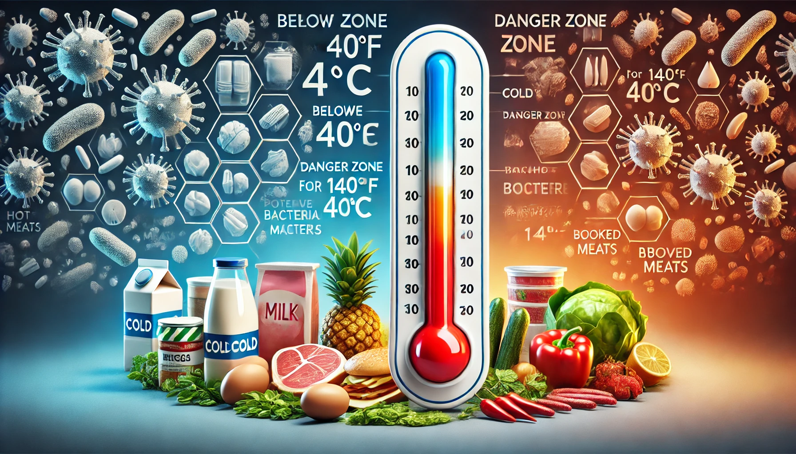
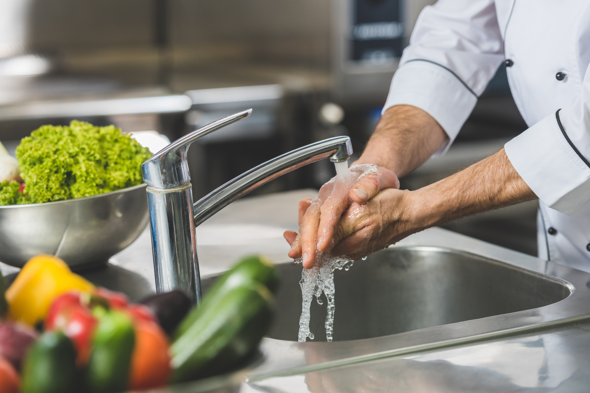
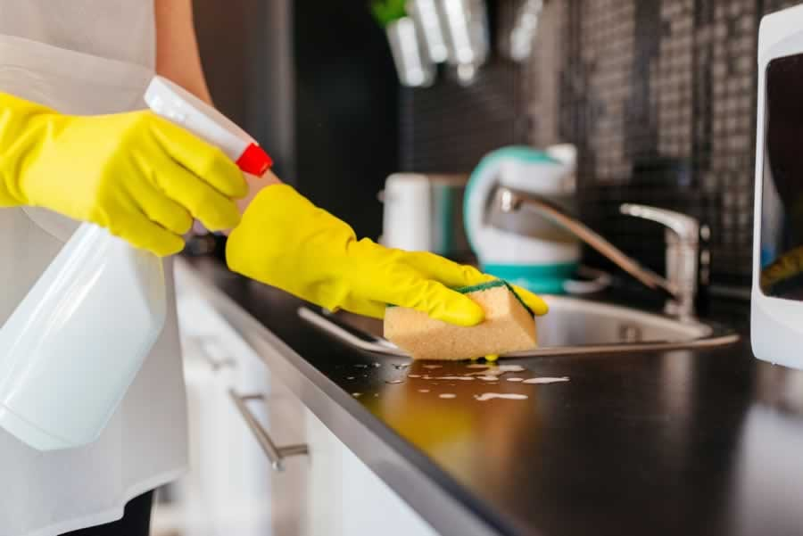

Access our comprehensive food safety guides to ensure safe handling and distribution practices for donated food. It's crucial to follow proper safety protocols to minimize foodborne illnesses and protect the community.
Key Food Safety Resources

Cold foods should be kept below 40°F (4°C) and hot foods above 140°F (60°C).

Avoid cross-contact with allergens and ensure freshness.

Use gloves when necessary for food handling.

Ensure a safe environment by maintaining cleanliness.
Contact Us
If you're ready to schedule your first donation or need more information, feel free to contact us.